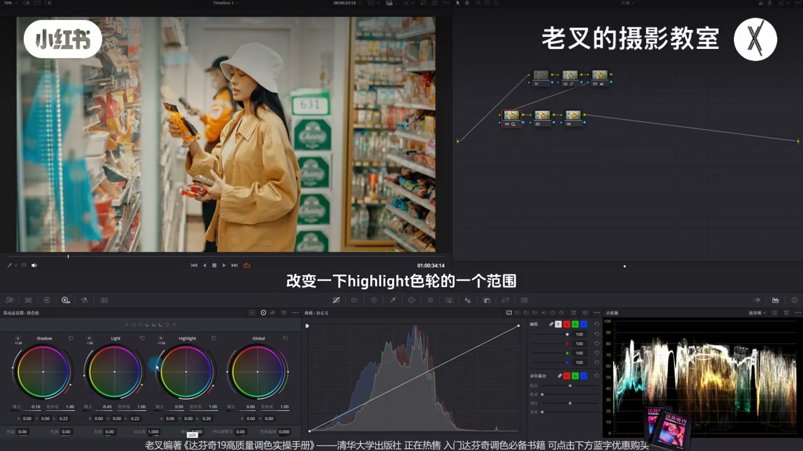
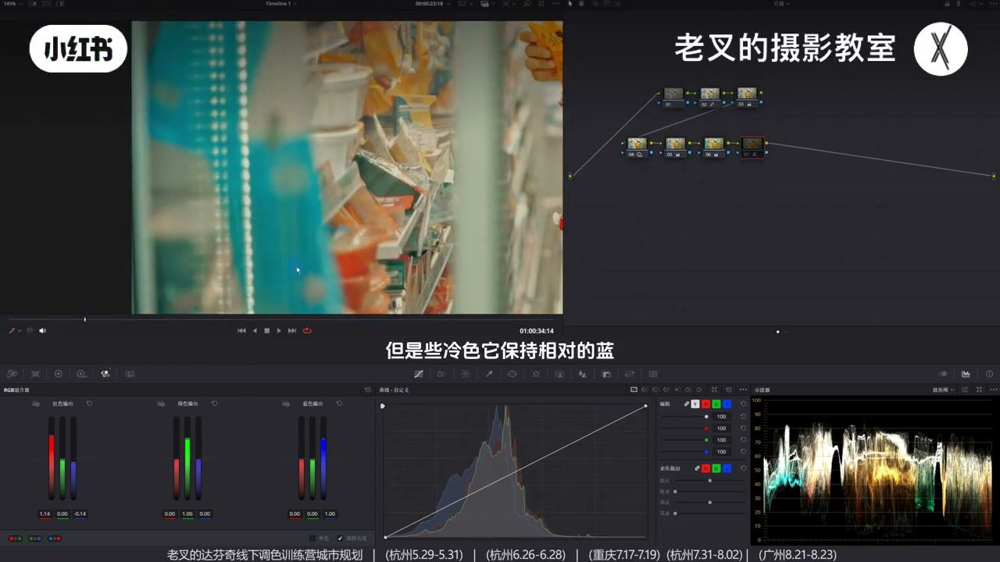
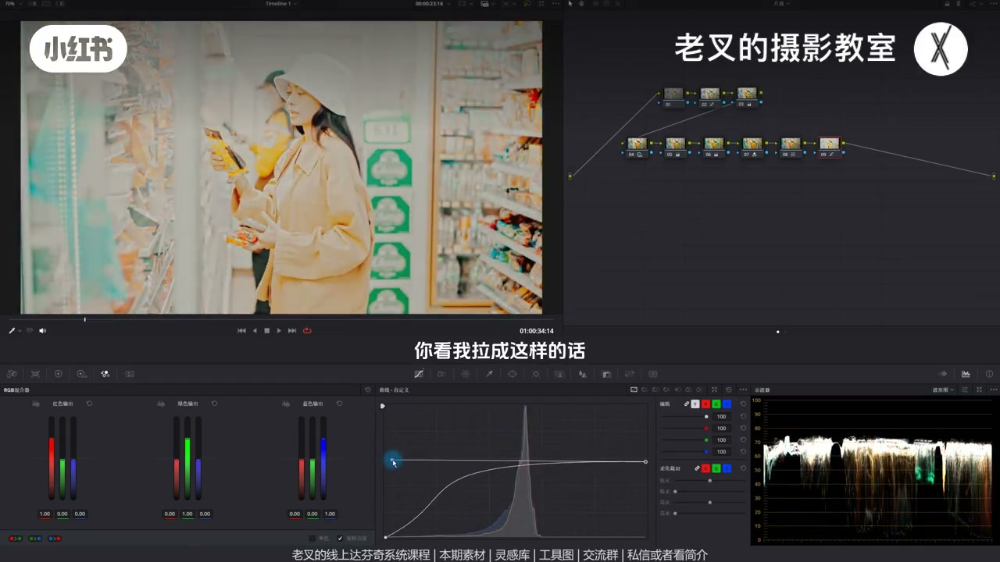
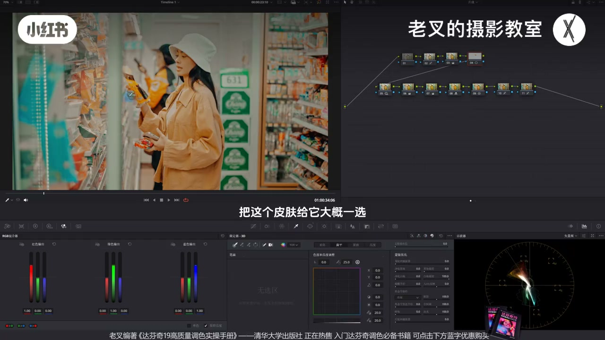
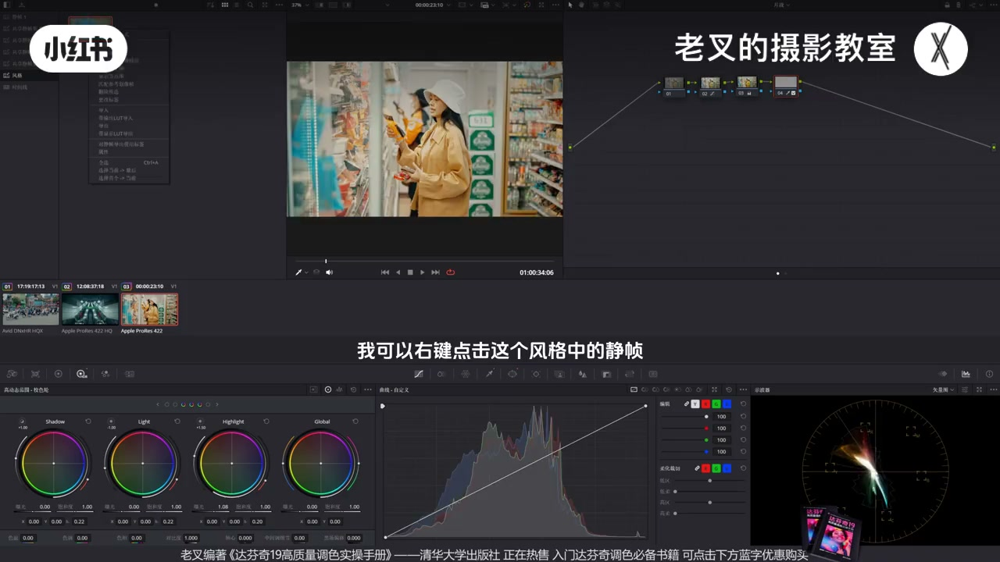

内容要点
手搓室内柔和哑光：先确保无大面积过曝。用 HDR 压 Light/Shadow、护 Highlight，再阴影抬/高光降收缩反差；为做 LUT 可不画遮罩。颜色可暖绿，RGB 混合器拉开红蓝防滤镜感，蜘蛛网去脏黄。核心是可编辑样条线大幅压高光杠杆成哑光，暗部波杆找回反差；饱和度曲线降高饱和艳度，3D 限定器救人脸反差。导出更推共享静帧附加节点图，可改力度。
知识结构
HDR 降 Light/Shadow、抬 Highlight 范围；阴影抬高光降收反差。
暖绿全局易糊滤镜；RGB 混合器保红蓝；蜘蛛网去脏黄留粉感。
样条线大胆压高光+左拉杠杆；暗部上提右拉波杆回反差。
饱和曲线降高饱和；3D 限定器略抬 Highlight 护脸反差。
可生成 33 点 LUT；更推共享静帧附加节点图，跨项目可改。
哑光=主要内容下移且两端不炸、反差不强，关键一刀在样条线压缩高光。颜色要防单一滤镜感；做人脸可选区。可复用优先共享静帧节点图，比死 LUT 好改。
00:00-01:38哑光前提：无大过曝；压中灰护反差
很多人嫌 LUT 不好改，本期手搓。哑光一般不太亮，且大面积破曝易高光断层。全曲线硬压会反差过强不舒服。
第二排 HDR：降 Light 与 Shadow（避免死黑），略抬 Highlight 并改范围——主内容下移、高光暗部少动，压暗却不过度强化反差。再节点抬阴影、降高光滑块，初步哑光感；为做 LUT 先不画遮罩（绿植抢眼等可后补）。

01:38-03:25暖绿染色 + RGB 混合器 + 去脏黄
可加色温减色调走暖绿；全局染色易牺牲他色、像滤镜糊表面。RGB 混合器略提红通道、降蓝通道：暖更暖、冷相对保蓝，也护肤色。蜘蛛网同样可统一色相饱和。
加暖可能脏：蜘蛛网降黄饱和并略往橙，橙再略回黄——整体仍暖，去掉难受黄、留偏粉，是这类哑光常见色。

03:25-04:16样条线：哑光最重要一刀
打开可编辑样条线：高光端大胆下压，画面变暗后把延伸波杆往左多拉——波形被压缩即哑光。力度过大则收回一点。
暗部略抬，暗部波杆往右拉，把暗部反差做回来。前面节点可不做，这一刀有了哑光感；颜色该有还是得有。

04:16-05:23降高饱和艳度；限定器护脸反差
向量上看未加倍时颜色仍偏艳：饱和度曲线降右端（高饱和），暗部也可略降。若脸受光反差掉太多，前插节点用 3D 限定器粗选皮肤，略抬 Highlight 把脸拉回来；为做 LUT 不精细抠唇。
整体低反差但人脸反差保留。遮罩记得跟踪。

05:23-08:08导出：33 点 LUT 不如共享静帧可改
建议隐藏还原与皮肤选区，片段缩略图右键生成 33 点 LUT，拷进 LUT 库文件夹刷新。套用：还原后拖 LUT。但 LUT 难改。
更推：画廊新建共享静帧集，只开风格节点抓静帧——存在本机可跨项目。还原后右键「附加节点图」粘贴风格节点，可回改色温色调。多镜演示肤色因 RGB 混合器仍相对正确。素材知识分享平台自取。

完整转录（335段）
以下文本由 Whisper medium 模型自动转录，可能存在少量识别误差，已尽可能修正。
怎么做出这种哑光的效果
这也是很多人问过的风格
他们觉得LUT不是很好套
要修改很麻烦
所以这一期我们就来分享一下
该怎么用达芬吉手搓出这种风格
我们先给画面做一下还原
大概是这样的一个结果
要做出哑光的感觉
首先你得先确保
画面中没有大面积破爆的内容
否则你的高光可能会断层
不绝对
但可能会断层
而且哑光是什么感觉
一般的哑光都不会特别亮
对不对
所以我们把它一按
可是我们如果全曲给它一按
哑光的话又不舒服
对吧
这样会显得反差很强
所以这时候我们就要考虑
把画面的主要内容给它往下降
建立几个节点
拉到第二排
我们在第二排的第一个节点中
用HDR色轮
给它降低一点中灰部分的爆光
也就是稍微降低一点Light色轮的爆光
再降低一点Shadow色轮的爆光
要注意你的画面中不要太多的死黑
然后高光给它稍微提高一点
改变一下Highlight色轮的一个范围
好
大概是这个情况
我们这样做的目的是为了啥
我们可以看波形图的变化
我们希望它能够偏暗
可是又不想让它因为压暗
导致画面显得反差增加
所以我们可以让主要的内容给它往下走
但是高光和暗部不发生改变
那这样就能够保护画面的反差
不会过度的强化的前提下
还能够让它压暗
这个是我们的一个核心目的
也就是让画面主要内容下降的同时
高光不会破坏
再加上哑光的画面
一般反差不会特别强
所以我们可以再来一个节点
稍微提高一点阴影滑块
再降低一点高光滑块
好
大概是个结果
让它能够在我们确保了主要内容往下降的同时
还能够稍微收缩一点它的反差
让整个画面能够更加舒服
初步的风格其实就有了
那又因为我们是想把这个做成蜡色的
所以我们就不画任何的遮罩了
其实按理说还是有很多需要调整的
你比如说背后的这个绿色太抢眼了
我们要把它稍微降低一点
比如说右边这个架子
或假如如果想要突出主体的话
它应该压暗
但是呢
还是那句话
为了做蜡的
我们就先不做这些行为
直接来颜色
如果你希望画面能够走
稍微有一点点暖绿的感觉
那么你可以考虑给它加一点点色温
再减一点色调
这种暖绿的感觉其实也可以
当然你别的颜色也可以
一会我们再演示
但是我们这样的全局染色
非常容易让别的物体的色相受到牺牲
也就是让画面颜色过于单一
显得像是一层滤镜糊在表面
所以这时候我们可以再来一个节点
用2Gb混合器来优化一下颜色的分布
稍微提高一点
红色输出中红色通道的输值
再降低一点蓝色通道的输值
我们看到像这些颜色
暖的依旧是暖的
甚至更暖了
但是这些冷色
它保持相对的蓝
这就是我们想要的一个效果
并且也能够保护肤色
让它能够稍微显眼一点
更加突出一点
这个操作如果大家不熟悉的话
其实你用蜘蛛网也是一样的
这个色相和饱和度
给它做一下统一的调整
都是可以的
重点是希望让红是红的
蓝是蓝的
那至于绿色
我们已经全局偏绿了
自然啊
绿色就是绿色
但是一般来讲
加了暖之后
有可能会让你的画面
显得有点脏
对吧
我们有一个小方法
这个方法当然也要看具体情况
如果是针对我们这个画面的话
其实可以再来一个节点
用蜘蛛网把黄色的薄度
给它降低一点
可以让它稍微往橙色方向走一点
然后再把这个橙色的
稍微往黄色方向走一点点
我们看到这样的颜色是
不破坏画面整体偏暖的
这个前提下
能够去掉这些让你不舒服的黄
留下这些偏粉的这种效果
这种感觉其实也是这一类哑光的
特别是这种风格的片子
会有的一个颜色结果
这个效果还挺好的
当然你不喜欢就可以不做
这个问题不大
再然后
也就是哑光最重要的一步
我们要利用曲线
也就是打开曲线右上角三个点中的
可编辑的样条线
然后把它高光这一端往下压
多压一些
大胆压
压完了之后
这时候你画面不是变暗了吗
对吧
那么我们就可以把延伸出来的波感
给它往左边去拉
多拉一些
你看我拉成这样的话
它不就变成了哑光吗
在波形图上它就被压缩了
对吧
当然力度不要这么大
稍微回来一点
大概到这个程度
然后再稍微提高一点暗部
再把暗部以前出来的波感
给它往右边去拉
把它的暗部的反差给它做回来
此时你看
这种哑光的感觉是不是就有了
这其实非常非常简单
那至于你说我前面这些节点
不做行不行
你真不做问题也不大
重点就在于这一个节点的行为
这一个节点能做到的话
你的哑光的感觉具有
但是颜色该有还是得有
那这时候风格就出来了
最后我们其实也可以给它降低点
高饱和部分的饱和度
因为我们从实量图上去看
在没有两倍的前提下
颜色其实饱度还是比较高的
特别是画面中这些部分
颜色都有点咽了
对吧
那我们可以用曲线的饱和度
对饱和度曲线
把右边这一端给它往下降
稍微降低一点
我觉得暗部可以再来一点
这个曲线
稍微降低点高饱和部分的饱和度
让它颜色不要太咽
这时候如果你觉得
皮肤的反差降低太多
比如说是这一部分
它这里其实是有一定的受光的
你如果觉得它的皮肤的反差
降低的太多的话
你可以回到前面
再来一个节点
我们把皮肤给它选出来
选的其实非常简单
我们不用选的太精细
我们可以利用3D限定器
把这个皮肤给它
大概一选
好
选出来了对吧
给它再稍微提高一点点
highlight色轮
你看这样皮肤不就出来了吗
对吧
当然你想把肤色和嘴唇的颜色
给它独立开来也可以
但是我们为了做蜡色
所以我就不做的太精细了
你看这样的效果
其实对于整个画面中
都是一个看似低反差的一个结果
但是人脸它的反差还保留
所以整体的结果还是不错的
当然这个制造要跟踪
跟踪很简单
之前讲过非常多次
这样我们就把画面
从这样的一个结果
调成这样的一个风格
这个风格你如果喜欢的话
其实也挺好的
不喜欢的就算了
素材我也传到了
线上分享平台
大家可以私信
或者看我几天来
免费领取过去之后练练手
还有答复你的线上系统课程
和线下调色训练营
那我们要怎么把它做成LUT呢
我们其实之前说过这个方法
我建议把还原的节点
和皮肤的选区给它删去
给它隐藏了之后
打开片段的缩略图
在片段缩略图中右键
给它生成一个33点的LUT
然后再在LUT库中
随便找一个文件夹右键
打开文件位置
此时你会弹出一个文件夹
把你刚刚生成的
33点的LUT
拉到这个文件夹中
此时你在空白处
给它点一下刷新
那它就能够给它出现在
这个列表中
LUT怎么套呢
其实很简单
我们只需要给它把还原给打开
做好了还原之后
把LUT套到这个节点上
这种感觉就有了
这个还是很简单的
但是有个问题就是
你这个LUT是没法修改的
对吧
所以其实我更建议
用另外一种方式来做
也就是用节点的方式来套
左上角有个画廊
在画廊中
我们可以新建一个共享竞争集
然后你可以给它改名
比如说风格
同样的我们要删去
这些所有的还原
和皮肤的选区之类的
只把后面的风格化的节点给打开
然后再给它抓取一个竞争
这样它就能够在共享竞争集中
出现这个竞争
而共享竞争集有什么一个优势
它是能够跨项目的
因为它是存在电脑上的
任何项目都能够看到
这些共享竞争集
那么我们就可以利用这么一个方式
去给它做一个风格的赋予
比如说我给画面做好了还原
我可以右键点击这个风格中的竞争
选择附加节点图
这样它就会把这些创建出来的节点
给它以附加的形式
放在你选择的那个节点之后
比如说我这时候
我觉得这个画面稍微有点暖
我想让它冷一点
我就可以回到7号节点
给它稍微减一点点色温
也可以稍微加点色调
不要让它这么绿
你看这种感觉不也挺好的吗
对吧
它就能够让你去修改
这个方式比起蜡调好用的多
同样的
我们如果用别的镜头来演示的话
比如说这个画面是做好了一个还原
对吧
然后给它在画廊中右键点击附加节点图
就能够把这些节点给它粘贴上去了
你看这个效果
其实不错的对吧
它能够给它快速的赋予一个风格
而且我们做了这个RGB混合器的操作
所以肤色不会有受到太多的影响
它至少还是正确的色相
如果它产生了问题
你就可以在前面任何节点去做一定的修改
这个画面我们已经给它做好了还原
同样的在画廊中点击附加节点图
给它套上去
你看这种感觉是不是也挺好的
对吧
还是那句话
因为你有节点
所以所有的力度你都可以自己去调
如果你不喜欢哪个效果的话
你可以自己再去微调
这问题都不大
这个风格相对来讲还是比较个性化的
如果你觉得有用得到的机会的话
可以把色彩领取过去之后
感受一下这个思路
并且自己也尝试着做一个竞争风格
讲到这里
如果你觉得对你有帮助的话
还希望多多三连
好了
这期就到这里
886